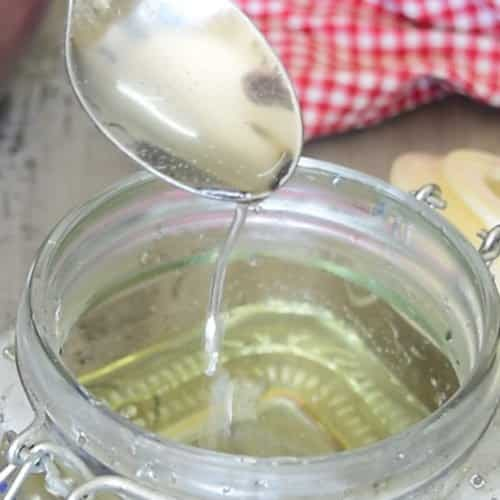

Habanero Simple Syrup

Description
Recipe I found for spicy and sweet
Ingredients
- 1 cup water
- 1 cup white sugar
- 2 habanero peppers, quartered
Steps
- Bring water to a boil in a saucepan. Slowly stir sugar into boiling water until sugar is dissolved, 2 to 3 minutes. Add habanero peppers to sugar-water mixture, reduce heat to medium-low, and simmer until syrup is thickened and pepper has slightly colored the syrup, about 15 minutes.
- Remove saucepan from heat and let syrup cool, about 1 hour. Remove peppers from syrup and store syrup in a glass jar.